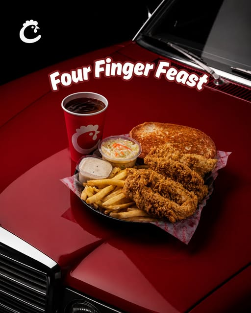

FRESH
EVERY
DAY
EVERY
DAY
The ChikChik way
Chicken fingers.
Done properly.
ChikChik is Bangladesh's first chicken finger restaurant. The promise is simple: thick, juicy, never-frozen chicken, hand-breaded and cooked to a crisp golden finish — with a house Chik Sauce that deserves its own dip.
See the feed ↗
Public social presence
Follow the crunch.
Fresh drops, behind-the-scenes and the next excuse to order chicken fingers.